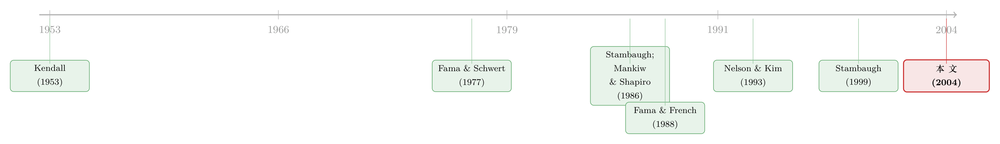

股利收益率到底能不能预测收益？——当「偏误修正」自己也修过了头
本文读的是 Lewellen (2004, Journal of Financial Economics)：用股利收益率预测股市收益这件事，被「小样本偏误」修正修到几乎「失语」；但作者指出，标准修正其实悄悄丢掉了一条信息——只要承认股利收益率是平稳的（ρ < 1），偏误就有上界。把这条约束加回来，股利收益率预测 1946–2000 年市场收益的证据重新变得极强（偏误调整后斜率 0.66，t 值 4.67，p 值 0.000），而且连 1990 年代末那场异常的牛市都没能把它推翻。
1 一个被「偏误」杀死的老结果
五十年前，Kendall (1953) 发现股价像是在时间里随机游走。此后大半个市场有效性的文献，都在问同一个问题：收益到底能不能预测？最受宠的预测变量，是把价格放在分母上的那几个财务比率——股利收益率 (dividend yield, DY)、账面市值比 (book-to-market, B/M)、盈利价格比 (earnings-price ratio, E/P)。它们都在度量「价格相对于基本面贵不贵」，因此天然应该和预期收益正相关：价格被高估时比率低，随后收益也低；价格便宜时比率高，随后收益也高。
这条逻辑听起来无懈可击。Fama and French (1988) 也确实跑出了像样的结果：用 DY 预测 1941–1986 年的 NYSE 月度收益，t 值在 2.20 到 3.21 之间，取决于收益怎么定义（等权还是市值加权、实际还是名义）。
但接着，一个自然的问题是：这些回归本身可信吗？
Stambaugh (1986) 和 Mankiw and Shapiro (1986) 给出了一个让人不安的答案——这类预测回归会系统性地偏向于「找到」可预测性。Nelson and Kim (1993) 用自助法 (bootstrap) 重做了 Fama–French 的检验，修正偏误之后，p 值一下子飙到 0.03 到 0.33。Stambaugh (1999) 更进一步，在 DY 服从一阶自回归 (AR1) 的假设下推导出斜率估计的精确小样本分布，用它去检验 1952–1996 年的 NYSE 收益，得到的单侧 p 值是 0.15。
于是到了世纪之交，学界的共识大致是：股利收益率那点预测力，多半是小样本偏误造出来的幻觉。这桩公案，本博客也专门写过（参见《股利收益率真能预测收益吗？——一桩被「标准误」改写的旧公案》）。
Lewellen (2004) 这篇文章，做的就是给这桩「结案」的公案翻案。它的主张听起来近乎挑衅：那个已经成为文献标准做法的小样本修正，在某些情况下会严重低估 DY 的预测力。
2 偏误从哪儿来：一笔「借」来的误差
要看懂这场翻案，得先看清偏误到底是怎么产生的。作者沿用的是 Stambaugh (1986, 1999) 与 Nelson–Kim (1993) 分析过的那套模型，由两个方程组成：
$$r_t = a + b\,x_{t-1} + e_t$$
$$x_t = \phi + \rho\,x_{t-1} + \mu_t$$
第一式是预测回归：用上期已知的预测变量 \(x_{t-1}\)（这里就是 DY）去解释本期收益 \(r_t\)。第二式说 \(x_t\) 自己服从一个 AR1 过程，\(\rho\) 是它的自相关系数，假设 \(\rho < 1\)（平稳）。
关键在两个残差的关系。价格上涨会让 DY（价格在分母）下降，所以 \(e_t\) 和 \(\mu_t\) 负相关。这一个负相关，违反了 OLS 要求回归元与误差在所有超前/滞后期独立的假设，也正是一切麻烦的源头。
把 OLS 估计写出来：
$$\hat{b} = b + (X'X)^{-1}X'e, \qquad \hat{\rho} = \rho + \big[(X'X)^{-1}X'\mu\big]_{(2)}$$
普通情形下这些估计误差期望为零。但这里不是：样本自相关在有限样本里被系统性地低估，而这份低估，会通过 \(e_t\) 与 \(\mu_t\) 的相关性「漏」进预测回归里。把 \(e_t\) 分解成 \(e_t = \gamma\mu_t + \nu_t\)（其中 \(\gamma = \mathrm{cov}(e,\mu)/\mathrm{var}(\mu)\)，因负相关而为负），代入后就得到了全文的引擎方程：
这个式子（论文 Eq. 5）漂亮地说明了一切。取期望：
$$E[\hat{b} - b] = \gamma\, E[\hat{\rho} - \rho]$$
样本自相关大约被低估 \((1+3\rho)/T\)。\(\hat{\rho}\) 偏低（\(\hat{\rho}-\rho<0\)），乘上负的 \(\gamma\)，于是 \(\hat{b}\) 向上偏——这就是 Stambaugh 偏误的全部秘密：\(\hat{b}\) 的偏误，是从 \(\hat{\rho}\) 的偏误那里「借」来的。
3 真正关键的一步：ρ 不能超过 1
到这里，标准做法是这样的：既然 \(\hat{b}\) 和 \(\hat{\rho}\) 都随机，那就对所有可能的 \(\hat{\rho}-\rho\) 积分，看 \(\hat{b}\) 的边缘分布，从中算出偏误、算出 p 值。Stambaugh (1999) 用的就是这个边缘分布。
但 Lewellen 在这里按下了暂停键。注意上面那个引擎方程其实还告诉我们一件更细的事——\(\hat{b}\) 在给定 \(\hat{\rho}\) 的条件下是正态分布的，其条件期望为
$$E[\hat{b} - b \mid \hat{\rho}] = \gamma(\hat{\rho} - \rho)$$
他把 \(\gamma(\hat{\rho}-\rho)\) 称为 \(\hat{b}\) 里「已实现的偏误」(realized bias)。这里藏着全文最关键的一句话：边缘分布的做法，等于默认我们对 \(\hat{\rho}-\rho\) 一无所知。
可我们真的一无所知吗？
如果愿意相信 DY 是平稳的，那么 \(\rho < 1\)。于是 \(\hat{\rho}-\rho\) 的下界就是 \(\hat{\rho} - 1\)。代回条件偏误，\(\hat{b}\) 里的偏误至多是 \(\gamma(\hat{\rho}-1)\)。当 \(\hat{\rho}\) 非常接近 1 时，这个上界会远小于标准修正给出的偏误——也就是说，凡是忽略 \(\hat{\rho}\) 这条信息的检验，都在低估 DY 的预测力。
于是作者提出偏误调整估计量：
$$\hat{b}_{adj} = \hat{b} - \gamma(\hat{\rho} - \rho)$$
最保守的检验，是假设 \(\rho \approx 1\)：此时偏误被取到最大，\(\hat{b}_{adj}\) 被压到最小。如果在这么保守的假设下 \(\hat{b}_{adj}\) 都还显著，那么对任何真实的 \(\rho<1\)，它只会更显著。
换个角度理解会更直观：抽样误差让 \(\hat{b}\) 偏高，当且仅当 \(\hat{\rho}\) 偏低。所以在零假设（\(b=0\) 且 \(\rho<1\)）下，「\(\hat{b}\) 很高」和「\(\hat{\rho}\) 很接近 1」这两件事很难同时出现。如果数据里它们偏偏同时出现了，那就是反对零假设的证据。这正是条件检验在形式化的东西。
值得一提的是，这套思路和 Stambaugh 自己的贝叶斯分析殊途同归：如果贝叶斯先验是一个 \(\rho=1\) 的点先验，两种检验完全一致；任何把 \(\rho>1\) 的概率压到零的先验，都会给出更强的拒绝。作者的贡献，是把这条约束搬进了频率学派的框架。
4 数据
价格与股利来自 CRSP，盈利与账面价值来自 Compustat。为与既有文献一致、并避开 AMEX/NASDAQ 公司入库带来的成分变化，检验只用 NYSE 的等权 (EWNY) 与市值加权 (VWNY) 指数。
DY：按市值加权 NYSE 指数计算，定义为「过去一年支付的股利 / 当前指数水平」（滚动年度股利）。回归用log(DY)，因为原始比率正偏、且波动率机械地依赖于其水平，取对数能同时治好这两个毛病。- DY 样本：1946 年 1 月 – 2000 年 12 月。略去大萧条时期，因为 1930 年代收益极度波动，这种波动会同时污染 DY 的方差和持续性。稳健性检验把样本对半切成 1946–1972 与 1973–2000。
B/M、E/P：限于 Compustat 时代 1963–2000。B/M 是上一财年账面权益比上月市值；E/P 是上一财年营业利润（折旧前）比上月市值。为保证可预测性，会计数据在财年结束后第 4 个月才更新；公司需有 3 年会计数据才入样。
描述统计里最该记住的一个数：log(DY) 的一阶月度自相关高达 0.997——正是这个接近 1 的数字，让「\(\rho<1\) 的约束」变得极有信息量。
5 主要结果：一次彻底的反转
把 NYSE 市值加权收益对 log(DY) 回归，1946–2000：
- OLS 斜率
0.92，标准误0.48； - Stambaugh (1999) 偏误修正后，估计降到
0.20，单侧 p 值0.308——不显著，与既有文献的「失语」结论一致； - 但用上 \(\hat{\rho}\) 的信息，偏误调整后的估计回升到
0.66，t 值4.67，在0.000水平显著。
作者特意强调，0.66 是在 \(\rho\approx 1\) 的保守假设下算的，已经偏低；若真实 \(\rho<1\)，它只会更大。子样本同样强劲：前半段 1946–1972 偏误调整估计 0.84，p < 0.001；后半段 1973–2000 估计 0.64，p 值 0.000。
B/M 和 E/P 的结论方向相同但稍弱：1963–1994 年它们能同时预测等权和市值加权收益；一旦把 1995–2000 加进来，就只剩对等权指数的预测力。但即便如此，证据也远强于 Kothari and Shanken (1997)、Pontiff and Schall (1998)（认为 1960 年后 B/M 几无预测力）以及 Lamont (1998)（认为 E/P 单独无法预测 1947–1994 的季度收益）。
6 反转中的反转：泡沫年代为什么没能推翻它
文章里我最喜欢的，是一段「题外话」。
1995 年 5 月，DY 跌到历史新低，按这套逻辑，它预言未来收益将远低于平均。结果呢？接下来六年 NYSE 指数翻了一倍多。一个预测变量，刚发出最强烈的看空信号，市场就给了它一记响亮的耳光。直觉上，这几年数据应该把「DY 能预测收益」按在地上摩擦。
事实也确实如此——对标准检验而言。把 1995–2000 加进回归，OLS 斜率从 2.23 腰斩到 0.92，用 Stambaugh 小样本分布算出的显著性从 0.068 退到 0.308。
但条件检验几乎纹丝不动：偏误调整斜率只从 0.98 降到 0.66，p 值仍然是 0.000。
为什么？因为这几年在压低 OLS 斜率的同时，也把 DY 的样本自相关从 0.986 抬到了 0.997。自相关越接近 1，「偏误的上界」就越小——预测斜率里可能的最大偏误从 1.25 直接掉到 0.25，恰好抵消掉了 OLS 估计的下滑。同一批数据，在两套检验里讲了截然相反的故事。这正是「把 \(\hat\rho\) 的信息用起来」这一思想最有力的注脚。
关于「用更多数据反而带来更大偏差」的另一面，本博客也有相关讨论（参见《用更多的数据，买来更大的偏差——长期预测回归里那场小样本幻觉》）。
7 两种检验怎么合用：一个修正版的 Bonferroni
既然条件检验在 \(\hat{\rho}\) 接近 1 时更有力、\(\hat{\rho}\) 远离 1 时反而是标准（无条件）检验更好，而我们事前并不知道 \(\rho\) 落在哪里，那自然的做法就是两个都做，再算一个联合显著性水平。作者给出的联合检验是对 Bonferroni 的一个修正：
$$\text{overall } p = \min(2P,\; P + D)$$
其中 \(P\) 是两个单独检验中较小的那个 p 值，\(D\) 是检验 \(\rho=1\) 的 p 值。\(2P\) 就是经典的 Bonferroni 上界；而 \(P+D\) 这一项承认：如果数据已经强烈拒绝 \(\rho=1\)（即 \(D\) 很小），那么把 \(P\) 翻倍就太保守了。直觉上，若 \(\hat{\rho}\) 其实只有 0.50，真实 \(\rho\) 大概率离 1 很远，这时根本用不着条件检验，直接用无条件检验的 p 值即可。模拟显示，在 \(\rho\) 从 0.9 到 0.9999 的范围内，这个联合检验在名义 5% 水平上的拒绝率都 \(\le 5\%\)。
8 文献脉络
这条线索的起点是 Kendall (1953) 对「随机游走」的观察。此后预测变量的清单越拉越长——Fama and Schwert (1977) 的利率与通胀、Campbell (1987) 的期限结构、Fama and French (1988) 的股利收益率、Campbell and Shiller (1988) 的股利价格比。其中 Fama and French (1988) 用 DY 跑出 t 值 2–3，几乎成了「收益可预测」的代表性证据。
接着，一个方法论的反思浪潮涌来：Stambaugh (1986) 与 Mankiw and Shapiro (1986) 揭示了滞后随机回归元带来的偏误，Nelson and Kim (1993) 用自助法把 p 值修到 0.03–0.33，Stambaugh (1999) 给出精确小样本分布——预测性的证据被这套「偏误修正」逐渐侵蚀。

Lewellen (2004) 正站在这道分水岭上：它不否定偏误修正本身（在 \(\hat\rho\) 不接近 1 时，无条件检验依然更优），而是指出修正过程丢掉了「\(\rho<1\)」这条约束，从而在 \(\hat{\rho}\to 1\) 时低估了预测力。几乎同期，Campbell and Yogo (2003) 从更有效的检验角度推进了同一问题，而 Ang and Bekaert (2002) 则继续追问长期预测性到底「在不在」。
评论与延伸（Q&A + 研究方向）
(a) 几个可能的疑问
Q：这篇文章是不是在说「Stambaugh 的修正错了」？
不是。作者反复强调，Stambaugh (1999) 那套小样本分布一般是恰当的。条件检验只在「预测变量的样本自相关非常接近 1」时才有用——否则 \(\rho\) 取高值本就不太可能，\(\rho<1\) 的约束提供不了多少信息。两者是互补关系，所以他才设计了联合检验。
Q：整篇文章的可信度，是不是全押在「DY 平稳（ρ<1）」这一个假设上？
基本如此，作者也很坦诚。但他给出了多重辩护：统计上只需 \(\rho\) 有个不超过 1 的上界即可；经济上，若 log DY 平稳，等价于 log 股利与 log 价格协整、长期同速增长，这与「反对爆炸性泡沫」的大量文献一致；而用一个非平稳变量去预测收益，本身也说不通。
Q：1951–2000 年股权溢价若真的永久性下降，会不会让 DY 出现非平稳、从而伪造出预测性？
作者直接回应了 Fama and French (2002) 的这个担忧。他指出：只要 \(\rho\) 仍小于 1，这类非平稳（可建模为截距 \(\phi\) 的变化）对检验影响不大；更重要的是，如果 DY 的下降真的来自风险溢价的永久性下移，那我们其实已经承认 DY 在追踪预期收益的变化——这等于默认了零假设是错的，而非「错误地拒绝」。
Q：为什么用 log(DY) 而不是原始 DY？
原始 DY 是个比率，正偏，而且波动率机械地依赖于水平（DY=2 时价格要动两倍，才有 DY=4 时一样的效果）。取对数同时解决偏度和异方差，让正态假设更站得住。
Q：E/P 为什么用「营业利润（折旧前）」而不是净利润？
Shiller (1984) 和 Fama and French (1988) 都认为净利润是基本面的嘈杂度量。作者的初步检验也显示，用净利润时 AR1 残差波动更大（标准差
0.062vs. 营业利润的0.049）、与收益的相关性更低，提示净利润里噪声更多。两者预测力相近，他为简洁只报营业利润的结果。
Q：这是不是说市场无效、存在套利机会？
文章本身是中立的。比率预测收益，既可以解释为「错误定价回归基本面」（mispricing view），也可以解释为「比率在追踪时变的贴现率/风险溢价」（rational-pricing view）。Lewellen 解决的是统计上能不能检测到预测性，而不是它背后是风险还是错误。这正好接上了贴现率作为资产定价中心议题的大讨论（参见《贴现率：资产定价的中心议题》）。
(b) 几个可能的研究问题与提案
1. 把这套「自相关上界」搬到公司债收益预测上。
【经济故事】公司债的信用利差、票面利率比等比率，同样高度持续，月度自相关常常逼近 1，预测回归也同样受 Stambaugh 偏误困扰。条件检验在这里可能格外有用。 【可行性】中。数据可用（TRACE + 利差序列），方法现成。难点在于信用利差的平稳性不像股利那样有协整理论支撑，「\(\rho<1\)」的经济辩护需要重新论证（信用周期可能制造长程依赖）。
2. 外资持有比例能否预测一国股市/债市收益？
【经济故事】跨国资金流和外资持仓比率往往非常持续，且与价格反向（资金涌入推高价格、压低未来收益的某些度量）。这天然契合本文的 \(e\)–\(\mu\) 负相关结构。 【可行性】中。需 EPFR/IMF CPIS 或单国托管数据。识别上要小心：持仓比率的非平稳更可能来自结构性开放进程，而非均值回归，会削弱 \(\rho<1\) 的可信度。
3. 用本文的联合检验，系统性重估「因子动物园」里基于比率的时序预测。
【经济故事】大量时序择时策略建立在持续性比率上，其显著性可能被边缘分布低估或高估。一次统一的、带 modified Bonferroni 的再检验，能告诉我们哪些预测性是真的。 【可行性】高。纯方法学复制，数据公开，计算量小，可直接产出一张「修正前后显著性对照表」。
4. 当 ρ 真的等于或略大于 1 时，条件检验会怎样误导？
【经济故事】本文的护城河是平稳性。若某些比率实际上是单位根甚至轻微爆炸，条件检验可能给出虚假的强拒绝。量化这种「边界处的脆弱性」本身就有价值。 【可行性】高。蒙特卡洛模拟即可，沿用作者的校准参数，把 \(\rho\) 推到 1.0001、1.001 看拒绝率如何失控。
我的判断
这篇文章的贡献，是把一个看似纯技术的观察，变成了对整条文献的重新定性：「修正偏误」和「丢掉信息」之间只隔一层窗户纸。标准做法对所有可能的 \(\hat\rho-\rho\) 积分，等于自愿放弃「\(\rho<1\)」这条几乎免费的先验；而当预测变量持续到自相关 0.997 时，这条约束几乎决定了一切。把它加回来，DY 的预测力从「不显著」（p=0.308）一跃到「t=4.67」，并且对 1990 年代末那场最该证伪它的牛市免疫——这个反转既干净又深刻。
对识别的担忧，我有两点。其一，整套结论的可信度高度依赖「\(\rho<1\) 且 \(\hat\rho\) 极其接近 1」这个特殊区间；一旦真实 \(\rho\) 稍低，条件检验的优势就迅速消失，作者自己也承认这一点，联合检验正是为此而设。其二，平稳性假设在样本只有半个多世纪、且恰好覆盖一段股权溢价可能永久下移的时期时，并非毫无争议——尽管作者对 Fama–French (2002) 的回应相当有说服力。
后续我最想看到的，是把这套「用持续性约束偏误」的思想，系统地搬到信用市场和跨国资金流这些「天然高持续、天然 \(e\)–\(\mu\) 负相关」的场景里，看看有多少被「偏误修正」判了死刑的预测性，其实只是被修过了头。
参考文献
- Campbell, J. (1987). Stock returns and the term structure. Journal of Financial Economics 18, 373–399.
- Campbell, J., Shiller, R. (1988). The dividend-price ratio and expectations of future dividends and discount factors. Review of Financial Studies 1, 195–228.
- Campbell, J., Yogo, M. (2003). Efficient tests of stock return predictability. Working Paper, Harvard University.
- Fama, E., French, K. (1988). Dividend yields and expected stock returns. Journal of Financial Economics 22, 3–25.
- Fama, E., French, K. (2002). The equity premium. Journal of Finance 57, 637–659.
- Fama, E., Schwert, G. W. (1977). Asset returns and inflation. Journal of Financial Economics 5, 115–146.
- Kendall, M. (1953). The analysis of economic time series, part I: prices. Journal of the Royal Statistical Society 96, 11–25.
- Kothari, S. P., Shanken, J. (1997). Book-to-market, dividend yield, and expected market returns: a time-series analysis. Journal of Financial Economics 44, 169–203.
- Lamont, O. (1998). Earnings and expected returns. Journal of Finance 53, 1563–1587.
- Lewellen, J. (2004). Predicting returns with financial ratios. Journal of Financial Economics 74, 209–235.
- Mankiw, N. G., Shapiro, M. (1986). Do we reject too often? Small sample properties of tests of rational expectations models. Economic Letters 20, 139–145.
- Nelson, C., Kim, M. (1993). Predictable stock returns: the role of small sample bias. Journal of Finance 48, 641–661.
- Pontiff, J., Schall, L. (1998). Book-to-market ratios as predictors of market returns. Journal of Financial Economics 49, 141–160.
- Shiller, R. (1984). Stock prices and social dynamics. Brookings Papers on Economic Activity, 457–498.
- Stambaugh, R. (1986). Bias in regressions with lagged stochastic regressors. Unpublished Manuscript, University of Chicago.
- Stambaugh, R. (1999). Predictive regressions. Journal of Financial Economics 54, 375–421.